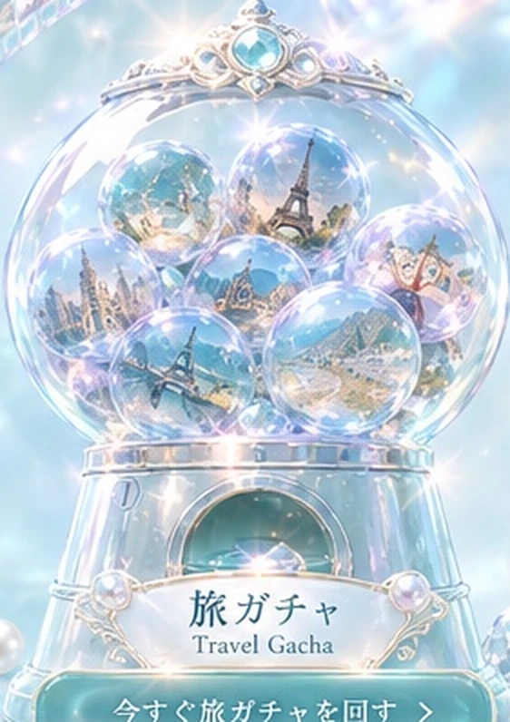

YOUR NEXT ADVENTURE

One spin. A new beginning.
Where to next?
気分を選んで、旅のカプセルを開こう。
予算・時期は確認済みデータがある旅先から抽選。未登録の場合は該当なしになります。
✧ TORAMI TRAVEL ✧
次の旅は、運命にまかせて
あなたを待っている景色に、出会う。

One spin. A new beginning.
気分を選んで、旅のカプセルを開こう。
予算・時期は確認済みデータがある旅先から抽選。未登録の場合は該当なしになります。